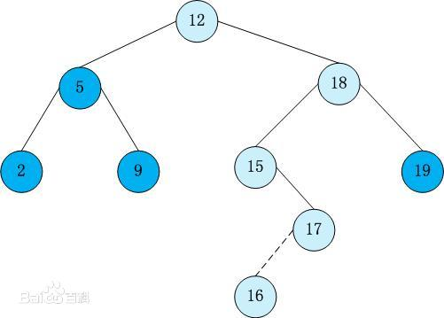

数据结构 - day03
题目1 - 链表
题目描述+试题解析
x
1【1】题目描述2在一个排序的链表中，存在重复的结点，请删除该链表中重复的结点，重复3的结点不保留，返回链表头指针。例如，链表 100->200->200->200->400->None 处理后为 100‐>200‐>40045【2】试题解析6链表是递增，直接对链表取值一一判断，符合条件的保留，不符合条件的直接 pass代码实现
x
1"""2在一个排序的链表中，存在重复的结点，请删除该链表中重复的结点，重复3的结点不保留，返回链表头指针4"""5class Node:6def __init__(self,value):7self.value = value8self.next = None910class Solution:11def del_repeat_node(self,head):12"""空链表 只有1个节点链表,直接返回自身"""13if head is None or head.next is None:14return head1516cur = head17# 100 200 200 200 400 None18while head and head.next:19if head.value == head.next.value:20head.next = head.next.next21else:22head = head.next2324return cur2526if __name__ == '__main__':27s = Solution()28# 链表: 100 200 200 200 30029p1 = Node(100)30p2 = Node(200)31p3 = Node(200)32p4 = Node(200)33p5 = Node(300)34p1.next = p235p2.next = p336p3.next = p437p4.next = p538# 返回头结点: 10039new_head = s.del_repeat_node(p1)40print(new_head.value)41# 打印新链表中所有节点: 100 200 30042while new_head:43print(new_head.value,end=" ")44new_head = new_head.next4546print()
树形结构回顾
二叉树
xxxxxxxxxx221【1】特点2树形结构具有分支、层次特性,其形态有点象自然界中的树34【2】几个概念52.1> 树根 '没有父节点的节点'62.2> 节点的度 '一个节点的子树的个数'72.3> 节点的层次 '从根开始定义起，根为第1层'82.4> 树的深度 '树中节点的最大层次'910【3】二叉树特点113.1> n个节点的有限集合123.2> 由根节点即左子树和右子树组成133.3> 严格区分左孩子和右孩子1415【4】二叉树的遍历164.1> 广度遍历 - 一层一层遍历，如何实现？--可利用队列174.2> 深度遍历18a) 前序遍历 ：根、左、右19b) 中序遍历 ：左、根、右20c) 后序遍历 ：左、右、根2122【5】'用Python实现二叉树'
二叉树示例

二叉树遍历
xxxxxxxxxx51【1】广度遍历结果：2【2】深度遍历3a> 前序遍历：4b> 中序遍历:5c> 后续遍历:代码实现二叉树遍历
x
1"""2二叉树3"""45class TreeNode:6"""节点类"""7def __init__(self,elem):8# 每个节点会有3个属性（数据 左孩子 和 右孩子）9self.elem = elem10self.left_child = None11self.right_child = None1213class Tree:14"""二叉树"""15def __init__(self):16self.root = None1718def add(self,value):19"""添加1个节点"""20node = TreeNode(value)21if self.root is None:22self.root = node23return24node_list = [self.root]2526while node_list:27cur_node = node_list.pop(0)28if cur_node.left_child is None:29cur_node.left_child = node30return31else:32node_list.append(cur_node.left_child)3334if cur_node.right_child is None:35cur_node.right_child = node36return37else:38node_list.append(cur_node.right_child)3940def breadth_travel(self,root):41"""广度遍历 - 查询所有节点"""42# 1.空树的情况43if root is None:44return45# 2.非空的情况46node_list = [root]47while node_list:48cur_node = node_list.pop(0)49print(cur_node.elem,end=' ')50if cur_node.left_child is not None:51node_list.append(cur_node.left_child)5253if cur_node.right_child is not None:54node_list.append(cur_node.right_child)5556def pre_traval(self,root):57"""前序遍历 - 根 左 右"""58if root is None:59return60print(root.elem,end=' ')61self.pre_traval(root.left_child)62self.pre_traval(root.right_child)6364def middle_traval(self,root):65"""中序遍历 - 左 根 右"""66if root is None:67return68self.middle_traval(root.left_child)69print(root.elem, end=' ')70self.middle_traval(root.right_child)7172def last_traval(self,root):73"""后序遍历"""74if root is None:75return76self.last_traval(root.left_child)77self.last_traval(root.right_child)78print(root.elem, end=' ')7980if __name__ == '__main__':81t = Tree()82t.add(1)83t.add(2)84t.add(3)85t.add(4)86t.add(5)87t.add(6)88t.add(7)89t.add(8)90t.add(9)91t.add(10)9293t.breadth_travel(t.root)94print()95t.pre_traval(t.root)96print()97t.middle_traval(t.root)98print()99t.last_traval(t.root)
题目2 - 二叉树
题目描述+试题解析
x
1【1】题目描述2从上到下按层打印二叉树，同一层结点从左至右输出，每一层输出一行34【2】试题解析51、广度遍历，利用队列思想62、要有2个队列，分别存放当前层的节点 和 下一层的节点代码实现
xxxxxxxxxx641"""2从上到下按层打印二叉树，同一层结点从左至右输出。每一层输出一行，可放到二维数组中遍历打印3"""45class TreeNode:6def __init__(self,value):7self.value = value8self.left = None9self.right = None1011class Solution:12def print_tree(self,root):13if not root:14return []1516# 初始队列，第1层17cur_queue = [root]18# 用于存放下一层的节点19next_queue = []2021while cur_queue:22node = cur_queue.pop(0)23print(node.value,end=" ")2425if node.left:26next_queue.append(node.left)27if node.right:28next_queue.append(node.right)2930# 当cur_queue为空时，则此层打印完毕，交换变量，继续下一层遍历31if not cur_queue:32cur_queue,next_queue = next_queue,cur_queue33print()343536if __name__ == '__main__':37s = Solution()38t1 = TreeNode(1)39t2 = TreeNode(2)40t3 = TreeNode(3)41t4 = TreeNode(4)42t5 = TreeNode(5)43t6 = TreeNode(6)44t7 = TreeNode(7)45t8 = TreeNode(8)46t9 = TreeNode(9)47t10 = TreeNode(10)48# 开始创建树49t1.left = t250t1.right = t351t2.left = t452t2.right = t553t4.left = t854t4.right = t955t5.left = t1056t3.left = t657t3.right = t758t8.next = t9.next = t459t10.next = t560t4.next = t5.next = t261t6.next = t7.next = t362t2.next = t3.next = t16364s.print_tree(t1)
题目3 - 二叉树
题目描述+试题解析
xxxxxxxxxx81【1】题目描述2请实现一个函数按照之字形打印二叉树，即第一行按照从左到右的顺序打印， 第二层按照从右至左的顺序打印，第三行按照从左到右的顺序打印，其他行以此类推34【2】试题解析51、采用层次遍历的思想，用队列或者栈（先进先出或后进先出，此处二选一，我们选择栈）62、把每一层的节点添加到一个栈中，添加时判断是奇数层还是偶数层7a) 奇数层：栈中存储时，二叉树中节点从右向左append，出栈时pop()则从左向右打印输出8b) 偶数层: 栈中存储时，二叉树中节点从左向右append，出栈时pop()则从右向左打印输出代码实现
xxxxxxxxxx751"""2请实现一个函数按照之字形打印二叉树，即第一行按照从左到右的顺序打印， 第二层按照从右至左的顺序打印，第三行按照从左到右的顺序打印，其他行以此类推3"""45class TreeNode:6def __init__(self,value):7self.value = value8self.left = None9self.right = None1011class Solution:12def print_binarytree(self,root):13if not root:14return1516# level：存储第几层，初始值为第1层，即根17level = 118# 用来存储当前层节点，栈模式（后进先出）19cur_stack = []20# 临时栈：用于存储下一层节点的栈（后进先出)21next_stack = []22cur_stack.append(root)23while cur_stack:24cur_node = cur_stack.pop()25print(cur_node.value,end=" ")2627# 每打印1个，就把左右孩子添加到临时栈中，打印下一层使用28# 当前行为奇数行，把下一行节点从左向右添加，因为下一行要从右向左输出29if level % 2 == 1:30if cur_node.left:31next_stack.append(cur_node.left)32if cur_node.right:33next_stack.append(cur_node.right)34# 当前行为偶数行，把下一行节点从右向左添加，因为下一行要从左向右输出35else:36if cur_node.right:37next_stack.append(cur_node.right)38if cur_node.left:39next_stack.append(cur_node.left)4041# 当前层空了，则交换两个栈42if not cur_stack:43cur_stack,next_stack = next_stack,cur_stack44level += 145print()4647if __name__ == '__main__':48s = Solution()49t1 = TreeNode(1)50t2 = TreeNode(2)51t3 = TreeNode(3)52t4 = TreeNode(4)53t5 = TreeNode(5)54t6 = TreeNode(6)55t7 = TreeNode(7)56t8 = TreeNode(8)57t9 = TreeNode(9)58t10 = TreeNode(10)59# 开始创建树60t1.left = t261t1.right = t362t2.left = t463t2.right = t564t4.left = t865t4.right = t966t5.left = t1067t3.left = t668t3.right = t769t8.next = t9.next = t470t10.next = t571t4.next = t5.next = t272t6.next = t7.next = t373t2.next = t3.next = t17475s.print_binarytree(t1)
题目4 - 二叉树
题目描述+试题解析
xxxxxxxxxx91【1】题目描述2给定一棵二叉搜索树，请找出其中的第 K 小的结点。例如，(5,3,7,2,4,6,8)中， 按结点数值大小顺序第三小结点的值是 434【2】试题解析51、二叉搜索树定义及特点6a> 若它的左子树不空，则左子树上所有结点的值均小于它的根结点的值；7b> 若它的右子树不空，则右子树上所有结点的值均大于它的根结点的值；8c> 它的左、右子树也分别为二叉排序树92、二叉搜索树的中序遍历是递增的序列，利用中序遍历来解决二叉搜索树示例

代码实现
xxxxxxxxxx541"""2给定一棵二叉搜索树，请找出其中的第 K 小的结点。例如，(5,3,7,2,4,6,8)中， 按结点数值大小顺序第三小结点的值是 43"""45class TreeNode:6def __init__(self,value):7self.value = value8self.left = None9self.right = None1011class Solution:12def __init__(self):13self.result = []1415def get_k_node(self,root,k):16array_list = self.inorder_travel(root)17if k <= 0 or len(array_list) < k:18return None19return array_list[k-1]2021def inorder_travel(self,root):22if root is None:23return2425self.inorder_travel(root.left)26self.result.append(root.value)27self.inorder_travel(root.right)2829return self.result303132if __name__ == '__main__':33s = Solution()34t12 = TreeNode(12)35t5 = TreeNode(5)36t18 = TreeNode(18)37t2 = TreeNode(2)38t9 = TreeNode(9)39t15 = TreeNode(15)40t19 = TreeNode(19)41t17 = TreeNode(17)42t16 = TreeNode(16)43# 开始创建树44t12.left = t545t12.right = t1846t5.left = t247t5.right = t948t18.left = t1549t18.right = t1950t15.right = t1751t17.left = t165253print(s.inorder_travel(t12))54print(s.get_k_node(t12,3))
题目5 - 二叉树
题目描述+试题解析
xxxxxxxxxx61【1】题目描述2输入一棵二叉搜索树，将该二叉搜索树转换成一个排序的双向链表。要求不 能创建任何新的结点，只能调整树中节点指针的指向34【2】试题解析5a> 二叉搜索树的中序遍历是一个不减的排序结果，因此先将二叉树搜索树中序遍历6b> 将遍历后的结果用相应的指针连接起来
二叉搜索树示例

代码实现
xxxxxxxxxx731"""2输入一棵二叉搜索树，将该二叉搜索树转换成一个排序的双向链表。要求不 能创建任何新的结点，只能调整树中节点指针的指向3"""45class TreeNode:6def __init__(self,value):7self.value = value8self.left = None9self.right = None1011class Solution:12def __init__(self):13self.result = []1415def convert_tree_link(self,root):16array_list = self.inner_travel(root)17if len(array_list) == 0:18return None19if len(array_list) == 1:20return root2122# 先把头节点和尾节点搞定23array_list[0].left = None24array_list[0].right = array_list[1]25array_list[-1].left = array_list[-2]26array_list[-1].right = None27# 搞定中间节点28for i in range(1,len(array_list)-1):29array_list[i].left = array_list[i-1]30array_list[i].right = array_list[i+1]3132return array_list[0]3334def inner_travel(self,root):35if root is None:36return3738self.inner_travel(root.left)39self.result.append(root)40self.inner_travel(root.right)4142return self.result4344if __name__ == '__main__':45s = Solution()46t12 = TreeNode(12)47t5 = TreeNode(5)48t18 = TreeNode(18)49t2 = TreeNode(2)50t9 = TreeNode(9)51t15 = TreeNode(15)52t19 = TreeNode(19)53t17 = TreeNode(17)54t16 = TreeNode(16)55# 开始创建树56t12.left = t557t12.right = t1858t5.left = t259t5.right = t960t18.left = t1561t18.right = t1962t15.right = t1763t17.left = t166465head_node = s.convert_tree_link(t12)66# 打印双向链表的头节点：267print(head_node.value)68# 从头到尾打印双向链表的节点69while head_node:70print(head_node.value,end=" ")71head_node = head_node.right7273print()